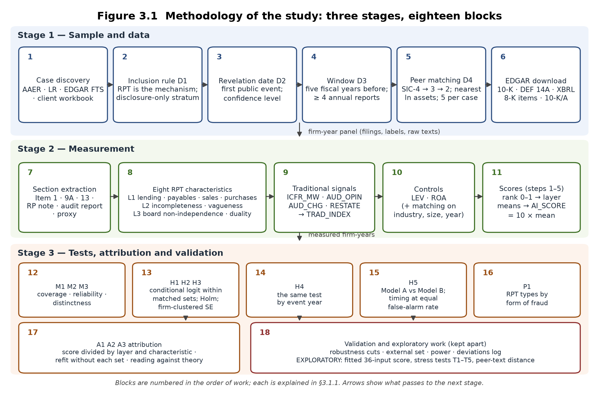

Related-party transactions and corporate fraud risk
Can observable financial, governance and disclosure characteristics of related-party transactions (RPTs) support earlier identification of elevated fraud risk? A matched case-control study of 31 US firms named in SEC enforcement for RPT-related misconduct and 145 matched firms, over the five fiscal years before each case became public (862 firm-years, FY2004–FY2024 data), built entirely from public EDGAR filings.
Run the model on a company Read the methodology See the results
What the study does, in plain words
Every US company that was later charged by the SEC over a related-party transaction is paired with up to five companies from the same industry and of similar size that were never charged. For each company and each of the five years before the problem became public, the study reads the annual report (Form 10-K) and the proxy statement (DEF 14A), codes eight characteristics of the related-party disclosures, and asks three things: do the fraud firms differ from their matched firms (H1–H3), from which year (H4), and do the characteristics add anything to the signals auditors and regulators already use (H5)? Every coded value keeps the sentence it came from, so a reviewer can follow any number back to the filing.
The methodology in one diagram

Stage 1 — Sample and data
- Case discovery. Every SEC accounting enforcement release 2005–2024, every litigation release 2010–2025, EDGAR full-text search of issuers' own filings and the client's workbook were searched for RPT-related cases.
- Inclusion rule D1. The order or complaint must describe a misstatement or misappropriation in which an RPT is the mechanism, or a charge for failing to disclose an RPT (the disclosure-only stratum).
- Revelation date D2. The first public event that revealed the problem, with a source document and a confidence level.
- Window D3. The five fiscal years before the revelation year; at least four annual reports are required.
- Peer matching D4. Five firms per case from the same four-digit industry, nearest in log total assets, with a 10-K in every window year and no enforcement history.
- EDGAR download. Filing lists, 10-Ks, proxy statements, XBRL financial values, 8-K item codes and amended 10-K/As, fetched from the SEC's public endpoints.
Stage 2 — Measurement
- Section extraction. Item 1, Item 9A, Item 13, the related-party note, the audit report and the proxy's related-party section.
- Eight RPT characteristics. Lending to, payables to, sales to and purchases from related parties (financial layer); incompleteness and vagueness of the disclosure (disclosure layer); board non-independence and CEO duality (governance layer).
- Traditional signals. Material weakness, modified or going-concern opinion, auditor change, restatement — the benchmark the characteristics must add to.
- Controls. Leverage and return on assets; industry, size and year are handled by the matching.
- Scores. Each characteristic ranked 0–1 across all analysed firm-years, averaged within layer, the three layers averaged and multiplied by ten: the AI risk score.
Stage 3 — Tests and validation
- M1–M3. Coverage, reliability and distinctness of the measures.
- H1–H3. Each layer against fraud within matched sets (conditional logit, Holm-adjusted, firm-clustered errors).
- H4. The same test in each of the five years.
- H5. Traditional signals alone against traditional signals plus the AI risk score, scored out of sample; timing at an equal false-alarm rate.
- P1. Transaction types by form of fraud, as a pattern.
- A1–A3. Every score divided into named evidence; stability when each set is left out; reading against theory.
- Validation and exploratory work. Alternative samples, an external set, power; and, kept apart, a fitted 36-input model with its stress tests.
What the tests found
H1 — financial exposure
Fraud firms have higher related-party financial exposure: odds ratio 1.61 per standard deviation [1.04, 2.49], as predicted; p = 0.031 (Holm = 0.062) with model-based errors, p = 0.206 with the firm-clustered errors the design asks for; 187 firm-years of 63 firms in 17 sets. not supported with model-based errors; not supported with firm-clustered errors. The subset that states an amount is selected on the outcome: fraud firms state amounts about three times as often.
H2 — disclosure
Fraud firms' RPT disclosures are less complete and vaguer: odds ratio 0.80 per standard deviation [0.63, 1.02], in the opposite direction; p = 0.075 (Holm = 0.075) with model-based errors, p = 0.374 with the firm-clustered errors the design asks for; 517 firm-years of 117 firms in 25 sets. not supported with model-based errors; not supported with firm-clustered errors. Part of the reversal is the coding convention for texts that state 'no transactions'.
H3 — governance
Fraud firms have weaker governance: odds ratio 1.70 per standard deviation [1.22, 2.37], as predicted; p = 0.002 (Holm = 0.006) with model-based errors, p = 0.153 with the firm-clustered errors the design asks for; 284 firm-years of 71 firms in 18 sets. supported with model-based errors; not supported with firm-clustered errors. The layer is carried by CEO duality.
H4 and H5
H4 (differences in earlier years): the design rule is met for no layer with the conditional logit as the primary test. H5 (the layers add to audit and internal-control signals): not supported for the design's AI risk score — Model B's out-of-set AUC 0.52 against Model A 0.45 and the traditional index alone 0.60; at an equal false-alarm rate the AI rule flags 0 of 31 cases, the traditional rule 3.
What you can do here
Run the model
Pick any of the 176 firms. For each window year see the filings used, every coded value with its evidence sentence, the ranks and layer scores computed live in your browser, the AI risk score against its threshold, and the exploratory fitted model's probability with each input's contribution.
Methodology (Chapter 3)
Design, data sources with the exact EDGAR endpoints, every measurement rule, every test and every statistic, with a glossary.
Results (Chapter 4)
All tables and figures: coverage, H1–H5, P1, A1–A3, power, the sample sensitivity and the exploratory model.
Review response
How the supervisor's review of 9 October 2026 was answered, point by point.
Companies
Every case and every matched firm with its enforcement record, revelation date and matching details.
Code & data
The two code repositories as zip files, the fitted model files, and how to reproduce every table.